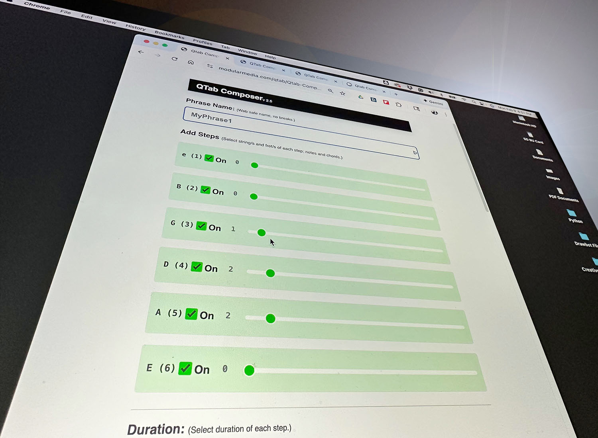
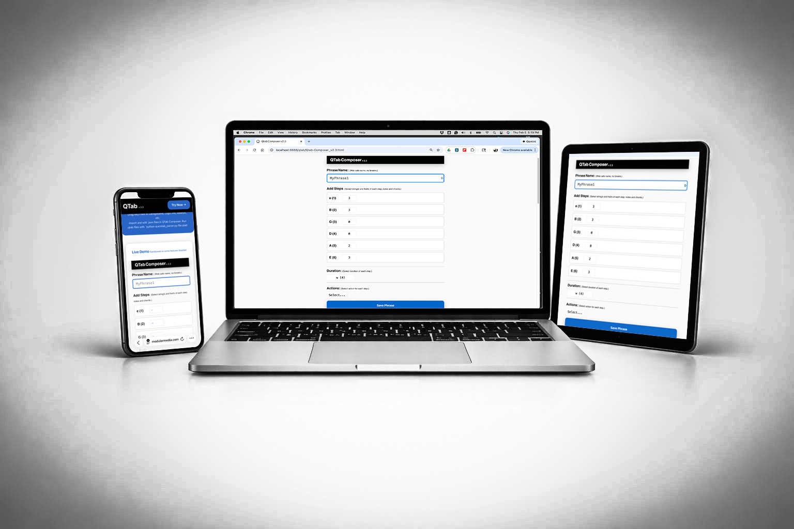

Write licks fast in any browser. Export parsable files*. No accounts, no setup, no limits.
Open ComposerCapture Steps: string + fret. Add rhythm. Stack phrases and chords. Done.

Write → Export → .qtab → Python → .mid → Digital Audio Workstation (DAW)
QTab adapts the immediacy of hand-drawn shorthand into a digital system for composing and archiving musical phrases.
QTab Composer runs on Phone, Tablet, Desktop. Offline. No internet needed.

Drag MIDI files to Reaper, GarageBand, Logic Pro, Ableton...
Import and edit .json files in QTab Composer. Parse .qtab files with Python & quicktab_parser.py
Works on phone too!
* .json and .qtab files are ready-to-parse into .mid (MIDI) or standard TAB using Python.